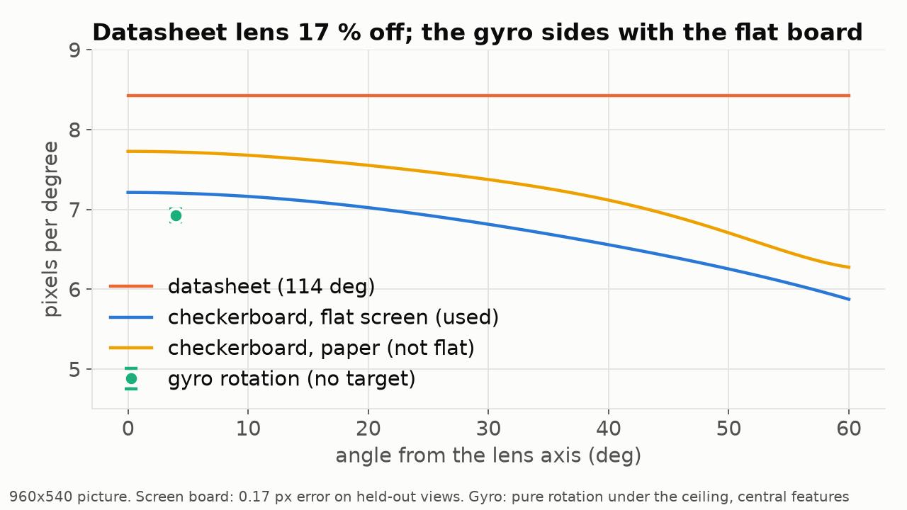

CONTESTED BATTLEFIELD AERIAL OPERATIONS CHALLENGE · GRAND FINAL
Sidro
The drone holds its spot when GNSS is jammed.
The M2-AI’s own camera and IMU, every number measured on the aircraft.
Engits · Aydan Eng, Paul Felfli
THE NEED AND THE VALUE
Without GNSS, a drone loses its spot, and its mission
220 %
more GPS signal-loss events on airliners, 2021 to 2024: interference is spreading
Built in
Market leaders are adding it: Quantum Systems on its Vector reconnaissance drones, Lockheed Martin on its Indago 4 quadcopter
#1
Canada’s first drone priority: low-cost tactical reconnaissance drones
Holding position is what keeps the mission alive: eyes stay on the target, the pilot works the camera instead of fighting drift, the drone does not slide into danger, and it works under bridges and indoors where GNSS never reaches.
And Sidro needs no new hardware: it can ship as a software update to M2-AIs already flying, and to other drones with a downward camera and a small Linux board.
IATA data via EASA, 2025 · The Defense Post, 2024-07-15 · Lockheed Martin, Indago 4 · National Defence, Defence Drone Initiative, 2026-07-23 · National Academies, NCHRP 1114, 2024
THE MONEY
Investors and governments are already paying for this
$1.2 B
raised by Quantum Systems (2026), maker of the Vector drones upgraded with optical navigation [verify]
$10 M
Series A for Vermeer (2025), a startup selling GNSS-free visual navigation for drones [verify]
1 M / yr
drones Orqa, the M2-AI’s maker, is scaling toward after its 2026 Series A [verify]
Governments are asking for it: the US Defense Innovation Unit, the US Air Force Research Lab, NATO’s innovation programmes and Canada’s drone initiative all list navigation without GNSS as a need [verify].
Our place: Sidro is the software layer that gives Orqa’s own aircraft this capability, with no new hardware.
[verify all] The Robot Report, 2026 · DroneLife, 2025-10-23 · sUAS News, 2026-03 · DIU PROJ00598 · NATO JATEC RFI 026-001 · National Defence, 2026-07-23
HOW IT WORKS
Sidro holds the spot by watching the ground
Justice D camera
Orqa hardware
Capture and IMU timing
ours
Floor tracking estimator
ours, on OpenCV
MSP stick commands
ours
Betaflight ANGLE mode
flight controller
Sensor fusion: track floor points, remove the drone’s tilt with the gyro, scale by height to get metres, steer back.
Rolling shutter: every picture row gets its own gyro attitude, timed against the measured camera clock.
APB compute: all on four ARM cores, no laptop; camera capture runs in its own thread.
When vision degrades: we report NOT READY and hand back neutral sticks, never a guess.
Ours: everything in blue, plus calibration, tests and bench tools. Not ours: OpenCV, numpy, Betaflight, Orqa’s Linux image. GNSS is never read while the switch is on.
Not tied to Betaflight: our ArduPilot and PX4 link (MAVLink) is already written and tested in simulation, so most drone autopilots are covered.
BACKUP
The evidence behind it
Who else does this · First walk · Timing and rolling shutter · Lens calibration · APB compute
BACKUP · WHO ELSE DOES THIS
Others need extra hardware; Sidro runs on what is there
Lockheed Martin Northstar
Vision-based navigation software that runs on an NVIDIA Jetson computer (Xavier NX or AGX Orin) [verify]
Vermeer
A visual positioning system with its own cameras and hardware, added to the aircraft [verify]
Sidro
Runs on the 4-core ARM board and the single downward camera the M2-AI already carries: nothing added
They prove the demand. Sidro adds no computer, no camera and no weight: it is a software update to drones already in service.
Honest gap: their systems fly today; Sidro has not completed a flight hold yet.
[verify] lockheedmartin.com/northstar · Vermeer: DroneLife, 2025-10-23 · Sidro: measured on the event aircraft
BACKUP · FIRST WALK
What worked, what didn’t, and why
Worked: our lens calibration caught a datasheet error that would have read every distance 14 % short.
Worked: processing on the APB made twice as fast; covering the lens gives NOT READY at once.
Didn’t: our first walk read 1 m as 0.46 m. The motion was in the pictures (green); the estimator dropped it in gaps. Fix: [in progress].

All measured on the event aircraft. First walk: hand-carried at about 1 m over a plain glossy floor
BACKUP · ROLLING SHUTTER AND TIMING
Every clock measured, every picture row corrected
−12 ms
gyro against camera clock, found from a hand rotation
Rolling shutter: rows are read top to bottom, so each row gets the attitude from the 200 Hz gyro at its own moment.
Bug we caught: the IMU driver’s timestamps were 15 s off unless the sensors started in one order. It would have broken every row.

Measured on the event aircraft: 561 frame pairs, fit error 0.21 px; frame stamps 16.666 ms apart, 2 µs spread; readout time [to measure]
BACKUP · CALIBRATION
The datasheet lens would have made every distance wrong
14 % short
every distance, if we had used the datasheet lens: enough to fail B1
Two checkerboards disagreed by 7 %. Instead of picking one, we added a third test that needs no target, pure rotation against the gyro, and it sided with the flat screen.

Datasheet values are for 1280×720; the event board runs 1920×1080. Equidistant fisheye fit (OpenCV) on 101 views, 0.17 px on held-out views
BACKUP · APB COMPUTE
Where the time goes on four ARM cores
27 → 13 ms
picture checks and sensors per frame after optimizing
Found: the camera buffers are uncached, so one frame copy cost 12 ms. Decision: capture runs in its own thread and keeps 30 fps.
Attitude filter 30× faster with plain quaternion maths. Next: the estimator (47 ms) is the biggest cost; 13–16 fixes per second today [update].

Measured on the APB (i.MX8M Plus, 4 × Cortex-A53): numpy 1.26, OpenCV 4.11 in /data